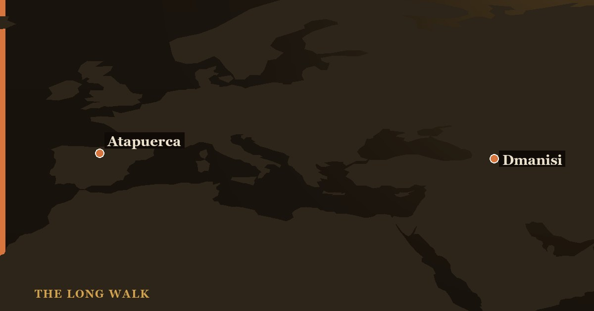

The Dmanisi hominins are early Homo fossils from Dmanisi, Georgia, dated to about 1.77 million years ago, with stone tools there as old as 1.85 million years. Five skulls, including the complete Skull 5 (546 cc), make it the best early Homo sample from one site. Their small brains and simple tools showed that the first people to leave Africa were not big-brained Homo erectus in the classic sense. Whether all five belong to one species is still debated.
The skull that changed the debate has the most modest of names: Skull 5. Its cranium, catalogued D4500, came out of the ground at Dmanisi, Georgia, in 2005, and its jaw, D2600, had been found five years earlier. Together they form the first complete adult hominin skull from the early Pleistocene. Its brain measured just 546 cc, less than half the modern average, set in one of the largest faces of any early human.
Skull 5 is one of five skulls known collectively as the Dmanisi hominins. Around 1.77 million years ago, they lived in the southern Caucasus, far outside Africa. They are the oldest well-dated human fossils in Eurasia.

A site under a medieval town
Dmanisi sits on a promontory above two rivers in southern Georgia, roughly 85 km from the capital, Tbilisi. Archaeologists originally came for the medieval town on top of it. In the 1980s, while emptying medieval storage pits, they found fossil animal bones in the walls and floors, and with them very simple stone tools.
A hominin jaw (D211) followed in 1991. Two skulls (D2280 and D2282) came out in 1999 and were published in Science in 2000 by Leo Gabunia, David Lordkipanidze and colleagues. Excavations continued under Lordkipanidze of the Georgian National Museum and produced, over the next decade, one of the most complete sets of early Homo remains from any single site.
The dates are unusually secure for a site so old. The fossil-bearing sediments rest on a volcanic basalt flow, and they preserve a record of a reversal in Earth’s magnetic field that can be matched to the global timescale. Combining these clues, Reid Ferring’s team showed that hominins visited the site repeatedly, over tens of thousands of years, rather than in a single brief stay.
Five skulls of the Dmanisi hominins
| Skull | Catalogue (cranium / jaw) | What stands out |
|---|---|---|
| Skull 1 | D2280 | Adult skullcap; found 1999 |
| Skull 2 | D2282 / D211 | Found 1999; its jaw was the 1991 find |
| Skull 3 | D2700 / D2735 | Adolescent, wisdom teeth still erupting |
| Skull 4 | D3444 / D3900 | Elderly individual who had lost all but one tooth |
| Skull 5 | D4500 / D2600 | Complete adult; 546 cc brain; massive face and jaw |
The other four braincases range from about 601 to 730 cc, according to the 2013 description of Skull 5. That overlaps with Homo habilis at the low end and with early African Homo erectus at the high end. The bodies were small too. A 2007 Nature study of the skeletons estimated adults at roughly 145–166 cm tall and 40–50 kg, with fairly modern leg proportions but primitive shoulders and arms.
That combination matters. Long, human-like legs suit efficient walking over long distances, the kind of travel needed to spread across continents. The Dmanisi bodies suggest that the modern way of walking arrived well before the large brain, and that it may have been the more important asset for leaving Africa.
Skull 5 and the case for lumping
Lordkipanidze’s team published Skull 5 in Science in October 2013, and they used it to make a bold argument. The five Dmanisi skulls, they pointed out, differ in shape about as much as skulls in a group of modern humans or chimpanzees. Yet they come from one site, from roughly the same time.
Their conclusion: the Dmanisi hominins were one population of a single species. Then came the provocative part. If one population could look this varied, perhaps several African species, such as Homo habilis, Homo rudolfensis and early Homo erectus, were really one evolving lineage too. The team placed Dmanisi in Homo erectus in a broad sense.
Not everyone accepted this. In 2014, Jeffrey Schwartz, Ian Tattersall and a colleague argued in a Science comment that the differences in teeth, jaws and skulls point to more than one kind of hominin at Dmanisi. The huge D2600 jaw had in fact been named the type of a separate species, Homo georgicus, in 2002, before the matching cranium was found.
The question is less about Georgia than about method. “Lumpers” see variation within a species; “splitters” see separate species. Dmanisi is the best test case available, because it removes time and geography as excuses for the differences. Both camps still claim it supports them.
The stakes are high. If the lumpers are right, early Homo looks less like a bush of separate species and more like a single, highly variable trunk, spread across Africa and western Asia. If the splitters are right, at least two kinds of hominin reached the Caucasus at almost the same time. Our human family tree explainer shows why such choices reshape the whole diagram.
The toothless elder
Skull 4 (cranium D3444, jaw D3900) belonged to an older individual who had lost every tooth but one, a left canine. Bone had filled in the empty sockets, a process that takes time. David Lordkipanidze and colleagues described it in Nature in 2005 and argued that this person survived for years without being able to chew normally.
How? The authors suggested soft plant foods, brains and marrow, or help from others. The last possibility is the most often quoted, because it would mean some form of care almost 1.8 million years ago. It is also the hardest to prove: survival alone does not reveal who, if anyone, helped, and a diet of soft or pounded food could have been managed by the individual. We cover a similar debate for a much later Neanderthal in our article on the Shanidar Neanderthals.
How the Dmanisi hominins rewrote Out of Africa
Before Dmanisi, a tidy story explained the first human expansion out of Africa. Large-brained, long-legged Homo erectus, carrying Acheulean hand axes, left about 1 million years ago. Dmanisi broke almost every part of it.
- The date. A 2011 PNAS study led by Reid Ferring found stone tools at Dmanisi in layers dating from about 1.85 to 1.78 million years ago, slightly older than the skulls themselves.
- The brains. At 546–730 cc, they were small. Leaving Africa did not require the brain size of later H. erectus.
- The tools. The Dmanisi artefacts are simple cores and flakes of the Oldowan type, not hand axes. Explore the difference in our guide to stone-knapping methods.
Later finds pushed the date back further. Stone tools from Shangchen in China, reported in Nature in 2018, are about 2.1 million years old. That leaves two possible readings of Dmanisi. Either hominins left Africa before classic Homo erectus had fully evolved, or Homo erectus began as a far smaller-brained and more variable species than once believed. Either way, the first Eurasians were more modest than the old story assumed.
Follow the routes on the migration map, read the bigger picture in the Out of Africa theory explained, or meet the species in who was Homo erectus. On the interactive family tree, Dmanisi sits right at the start of the H. erectus branch.
Trace the earliest movements of Homo out of Africa and across Eurasia on the migration map.
Open the migration map →Frequently asked questions
How old are the Dmanisi hominins?
The fossils are about 1.77 million years old, and stone tools at the site date from about 1.85 to 1.78 million years ago, according to a 2011 study.
What is Dmanisi Skull 5?
Skull 5 (cranium D4500 with jaw D2600) is the first complete adult hominin skull from the early Pleistocene. It had a 546 cc brain and a very large face, and was published in Science in 2013.
What species were the Dmanisi hominins?
Most researchers place them in an early form of Homo erectus. Some argue the fossils represent more than one species, and the large D2600 jaw was once named Homo georgicus.
Did the toothless Dmanisi hominin need help to survive?
Possibly. Skull 4 had lost all but one tooth years before death. Help from others is one explanation, but soft foods could also explain survival, so the care hypothesis is not proven.
- Lordkipanidze, D. et al. (2013). 'A complete skull from Dmanisi, Georgia, and the evolutionary biology of early Homo.' Science 342, 326–331. pubmed
- Lordkipanidze, D. et al. (2005). 'The earliest toothless hominin skull.' Nature 434, 717–718. nature.com
- Ferring, R. et al. (2011). 'Earliest human occupations at Dmanisi (Georgian Caucasus) dated to 1.85–1.78 Ma.' PNAS 108. pnas.org
- Schwartz, J. H., Tattersall, I. & Chi, Z. (2014). 'Comment on “A complete skull from Dmanisi, Georgia, and the evolutionary biology of early Homo”.' Science 344, 360. science.org